clustOpt: Quickstart Guide
Compiled: 2026-07-27
Source:vignettes/quick_start_guide.Rmd
quick_start_guide.Rmd
library(Seurat)
# Only v5 Seurat Assays are supported
options(Seurat.object.assay.version = "v5")
# Increase future globals limit for large datasets
options(future.globals.maxSize = 2e9) # 2GB limit
library(dplyr)
library(tidyr)
library(ggplot2)
library(clustOpt)
library(future)
set.seed(42)Read in the tutorial dataset. This data was generated from the Asian Immune Diversity Atlas (data freeze v1). It contains only B cells, Monocytes, and NK cells from 10 donors which have been sketched to a total of 1000 cells using the leverage score based method of Seurat’s SketchData function.
input <- readRDS(
system.file(
"extdata",
"1000_cell_sketch_10_donors_3_celltypes_AIDA.rds",
package = "clustOpt"
)
)
input@meta.data |>
summarize(
Donors = n_distinct(donor_id),
Celltypes = n_distinct(broad_cell_type),
`Cell Subtypes` = n_distinct(author_cell_type),
Ethnicities = n_distinct(Ethnicity_Selfreported),
Countries = n_distinct(Country)
) |>
pivot_longer(cols = everything(), names_to = "Metric", values_to = "Count")
#> # A tibble: 5 × 2
#> Metric Count
#> <chr> <int>
#> 1 Donors 10
#> 2 Celltypes 3
#> 3 Cell Subtypes 10
#> 4 Ethnicities 5
#> 5 Countries 3
input <- input |>
SCTransform(verbose = FALSE) |>
RunPCA(verbose = FALSE)
ElbowPlot(input, ndims = 50)
input <- RunUMAP(input, dims = 1:20, verbose = FALSE)
DimPlot(input,
group.by = "donor_id",
pt.size = .8
) +
coord_fixed()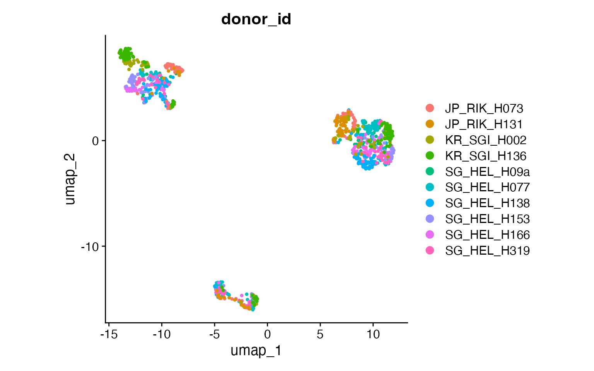
DimPlot(input,
group.by = "broad_cell_type",
pt.size = .8
) +
coord_fixed()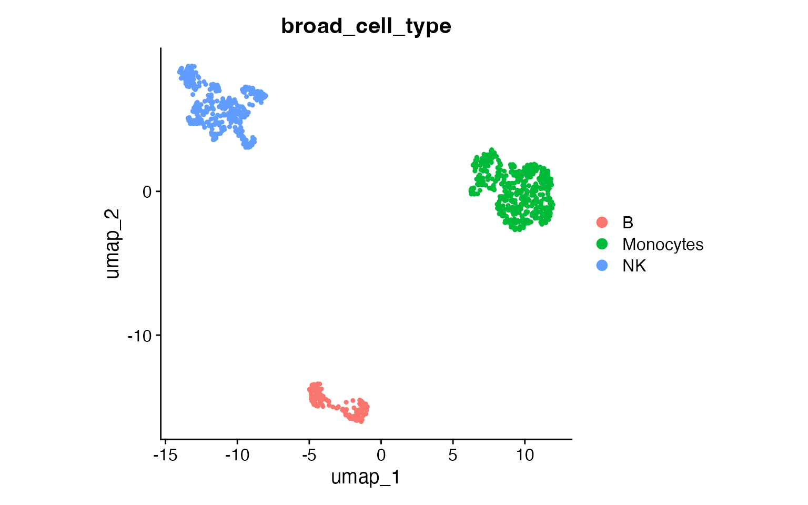
DimPlot(input,
group.by = "author_cell_type",
pt.size = .8
) +
coord_fixed()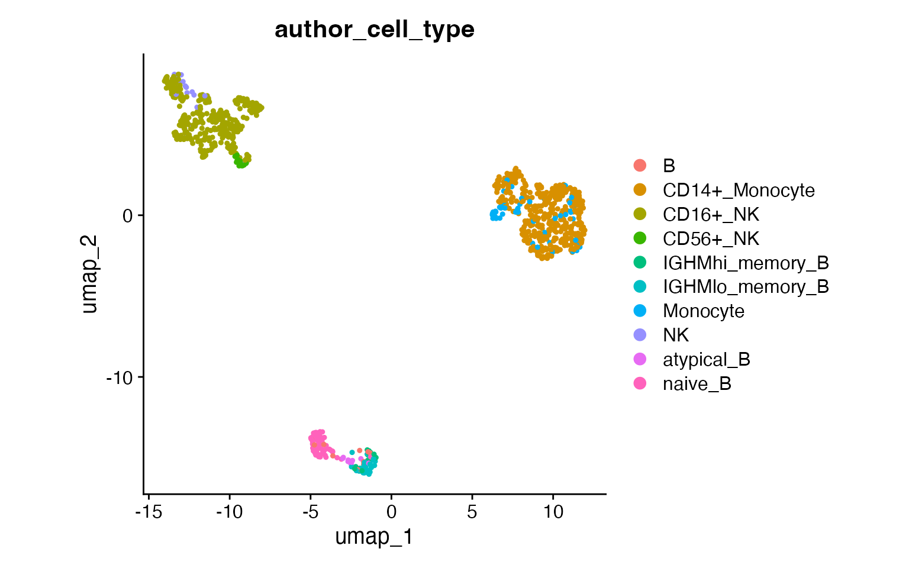
How clustOpt Works
clustOpt uses subject-wise leave-one-out cross-validation to find clustering resolutions that generalize across biological replicates:
- PC Splitting: Principal components are split into two independent sets (odd: PC1, PC3, PC5… and even: PC2, PC4, PC6…)
- Training: For each held-out subject, a Random Forest is trained on one PC set to predict cluster assignments
- Evaluation: Clustering quality metrics are calculated on the opposite PC set
This separation ensures that the evaluation is performed on data independent from what was used for training, preventing overfitting and providing a more honest assessment of clustering reproducibility.
Running clustOpt
Subject-wise cross validation is parallelized with
future and future.batchtools can be used for
HPC job schedulers. For details on which plan to use for your setup, see
the future package documentation. The code below requires a large amount
of RAM (32 GB recommended) and 10 cores to run in about 10 minutes.
plan("multisession", workers = 11)
cv_results <- clust_opt(input,
subject_ids = "donor_id",
ndim = 20,
verbose = 1,
train_with = "even"
) |>
progressr::with_progress() # Optional, just adds progress bar
#> ── clustOpt ────────────────────────────────────────────────────────────────────
#> ℹ Input is small enough to run with all cells
#> ✔ Using 10 subject(s) with at least 50 cells:
#> • JP_RIK_H073 (100 cells)
#> • JP_RIK_H131 (83 cells)
#> • KR_SGI_H002 (76 cells)
#> • KR_SGI_H136 (127 cells)
#> • SG_HEL_H09a (52 cells)
#> • SG_HEL_H077 (147 cells)
#> • SG_HEL_H138 (130 cells)
#> • SG_HEL_H153 (85 cells)
#> • SG_HEL_H166 (123 cells)
#> • SG_HEL_H319 (77 cells)
#> ℹ Found 110 combinations of test subject and resolution
#>
#> ── Holdout subject: JP_RIK_H073 ──
#>
#> ✔ [prep_train] 37.3s
#> ✔ [prep_test] 14.8s
#> ✔ [RunPCA + split_pca_dimensions] 80ms
#> ✔ [FindNeighbors + FindClusters] 31.7s
#> ✔ [project_pca] 10ms
#> ℹ train: 900 cells, test: 100 cells, 10 PCs, 11 resolutions
#> ✔ [precompute SNN] 299ms
#> ℹ [precompute dist] skipped (parallel plan; workers compute dist) (100 cells)
#> ✔ [future_lapply RF] 3.6s (11 resolutions)
#> ────────────────────────────────────────────────────────── JP_RIK_H073 1m 28s ──
#>
#> ── Holdout subject: JP_RIK_H131 ──
#>
#> ✔ [prep_train] 28.0s
#> ✔ [prep_test] 14.7s
#> ✔ [RunPCA + split_pca_dimensions] 84ms
#> ✔ [FindNeighbors + FindClusters] 5.2s
#> ✔ [project_pca] 11ms
#> ℹ train: 917 cells, test: 83 cells, 10 PCs, 11 resolutions
#> ✔ [precompute SNN] 381ms
#> ℹ [precompute dist] skipped (parallel plan; workers compute dist) (83 cells)
#> ✔ [future_lapply RF] 3.4s (11 resolutions)
#> ─────────────────────────────────────────────────────────── JP_RIK_H131 51.9s ──
#>
#> ── Holdout subject: KR_SGI_H002 ──
#>
#> ✔ [prep_train] 18.6s
#> ✔ [prep_test] 14.6s
#> ✔ [RunPCA + split_pca_dimensions] 102ms
#> ✔ [FindNeighbors + FindClusters] 5.3s
#> ✔ [project_pca] 9ms
#> ℹ train: 924 cells, test: 76 cells, 10 PCs, 11 resolutions
#> ✔ [precompute SNN] 310ms
#> ℹ [precompute dist] skipped (parallel plan; workers compute dist) (76 cells)
#> ✔ [future_lapply RF] 3.4s (11 resolutions)
#> ─────────────────────────────────────────────────────────── KR_SGI_H002 42.4s ──
#>
#> ── Holdout subject: KR_SGI_H136 ──
#>
#> ✔ [prep_train] 20.0s
#> ✔ [prep_test] 16.2s
#> ✔ [RunPCA + split_pca_dimensions] 99ms
#> ✔ [FindNeighbors + FindClusters] 6.7s
#> ✔ [project_pca] 10ms
#> ℹ train: 873 cells, test: 127 cells, 10 PCs, 11 resolutions
#> ✔ [precompute SNN] 341ms
#> ℹ [precompute dist] skipped (parallel plan; workers compute dist) (127 cells)
#> ✔ [future_lapply RF] 2.4s (11 resolutions)
#> ─────────────────────────────────────────────────────────── KR_SGI_H136 45.8s ──
#>
#> ── Holdout subject: SG_HEL_H09a ──
#>
#> ✔ [prep_train] 18.2s
#> ✔ [prep_test] 16.3s
#> ✔ [RunPCA + split_pca_dimensions] 89ms
#> ✔ [FindNeighbors + FindClusters] 7.1s
#> ✔ [project_pca] 9ms
#> ℹ train: 948 cells, test: 52 cells, 10 PCs, 11 resolutions
#> ✔ [precompute SNN] 401ms
#> ℹ [precompute dist] skipped (parallel plan; workers compute dist) (52 cells)
#> ✔ [future_lapply RF] 2.6s (11 resolutions)
#> ─────────────────────────────────────────────────────────── SG_HEL_H09a 44.6s ──
#>
#> ── Holdout subject: SG_HEL_H077 ──
#>
#> ✔ [prep_train] 19.8s
#> ✔ [prep_test] 15.5s
#> ✔ [RunPCA + split_pca_dimensions] 82ms
#> ✔ [FindNeighbors + FindClusters] 6.7s
#> ✔ [project_pca] 9ms
#> ℹ train: 853 cells, test: 147 cells, 10 PCs, 11 resolutions
#> ✔ [precompute SNN] 341ms
#> ℹ [precompute dist] skipped (parallel plan; workers compute dist) (147 cells)
#> ✔ [future_lapply RF] 2.2s (11 resolutions)
#> ─────────────────────────────────────────────────────────── SG_HEL_H077 44.6s ──
#>
#> ── Holdout subject: SG_HEL_H138 ──
#>
#> ✔ [prep_train] 20.0s
#> ✔ [prep_test] 15.8s
#> ✔ [RunPCA + split_pca_dimensions] 89ms
#> ✔ [FindNeighbors + FindClusters] 7.2s
#> ✔ [project_pca] 10ms
#> ℹ train: 870 cells, test: 130 cells, 10 PCs, 11 resolutions
#> ✔ [precompute SNN] 449ms
#> ℹ [precompute dist] skipped (parallel plan; workers compute dist) (130 cells)
#> ✔ [future_lapply RF] 2.3s (11 resolutions)
#> ─────────────────────────────────────────────────────────── SG_HEL_H138 46.0s ──
#>
#> ── Holdout subject: SG_HEL_H153 ──
#>
#> ✔ [prep_train] 20.6s
#> ✔ [prep_test] 15.9s
#> ✔ [RunPCA + split_pca_dimensions] 81ms
#> ✔ [FindNeighbors + FindClusters] 6.1s
#> ✔ [project_pca] 10ms
#> ℹ train: 915 cells, test: 85 cells, 10 PCs, 11 resolutions
#> ✔ [precompute SNN] 328ms
#> ℹ [precompute dist] skipped (parallel plan; workers compute dist) (85 cells)
#> ✔ [future_lapply RF] 2.5s (11 resolutions)
#> ─────────────────────────────────────────────────────────── SG_HEL_H153 45.6s ──
#>
#> ── Holdout subject: SG_HEL_H166 ──
#>
#> ✔ [prep_train] 19.5s
#> ✔ [prep_test] 16.9s
#> ✔ [RunPCA + split_pca_dimensions] 110ms
#> ✔ [FindNeighbors + FindClusters] 6.3s
#> ✔ [project_pca] 9ms
#> ℹ train: 877 cells, test: 123 cells, 10 PCs, 11 resolutions
#> ✔ [precompute SNN] 330ms
#> ℹ [precompute dist] skipped (parallel plan; workers compute dist) (123 cells)
#> ✔ [future_lapply RF] 2.6s (11 resolutions)
#> ─────────────────────────────────────────────────────────── SG_HEL_H166 45.7s ──
#>
#> ── Holdout subject: SG_HEL_H319 ──
#>
#> ✔ [prep_train] 19.9s
#> ✔ [prep_test] 17.1s
#> ✔ [RunPCA + split_pca_dimensions] 114ms
#> ✔ [FindNeighbors + FindClusters] 5.8s
#> ✔ [project_pca] 12ms
#> ℹ train: 923 cells, test: 77 cells, 10 PCs, 11 resolutions
#> ✔ [precompute SNN] 432ms
#> ℹ [precompute dist] skipped (parallel plan; workers compute dist) (77 cells)
#> ✔ [future_lapply RF] 3.2s (11 resolutions)
#> ─────────────────────────────────────────────────────────── SG_HEL_H319 46.6s ──
#> ✔ [total pipeline] 8m 21s
#> ────────────────────────────────────────────────────────────────────────────────
# Shut down stray workers
plan("sequential")Plotting the silhouette score distributions
plots <- create_sil_plots(cv_results |> drop_na())
plots[[1]]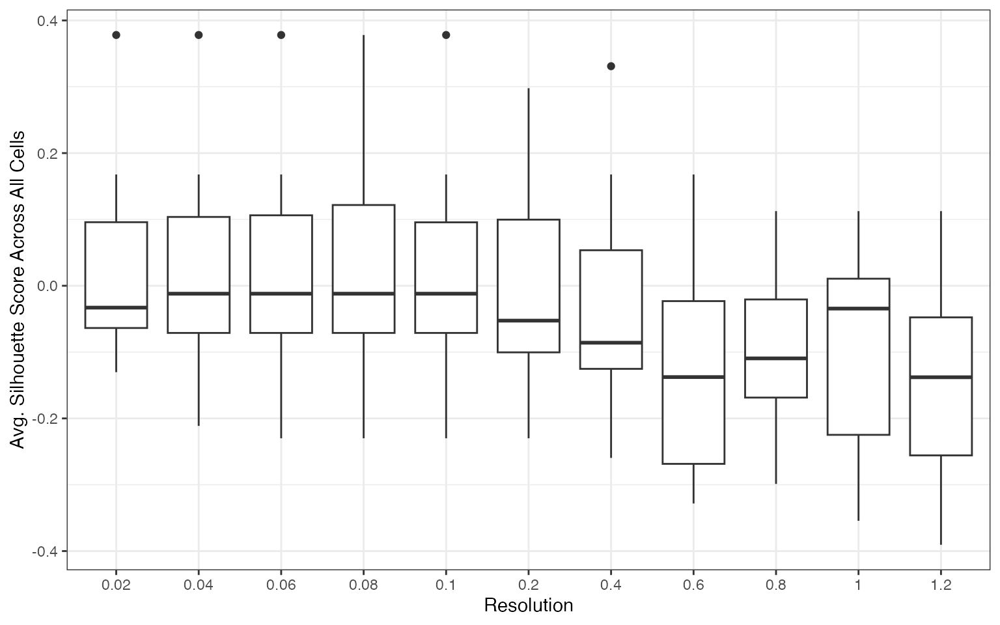
plots[[2]]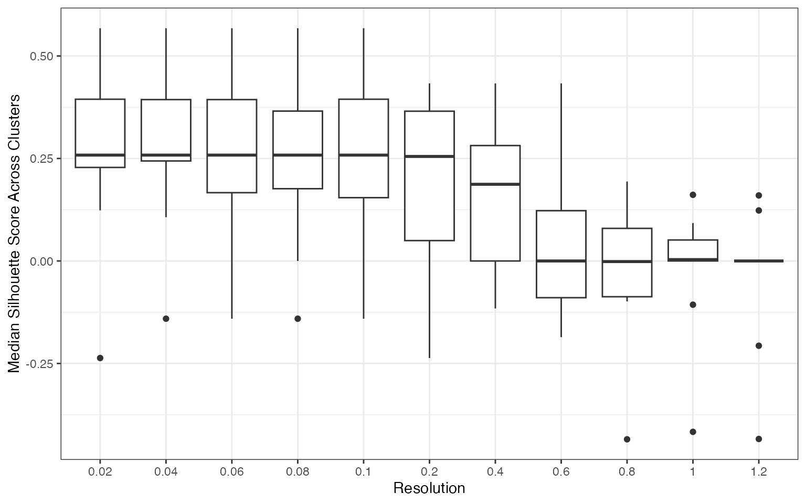
plots[[3]]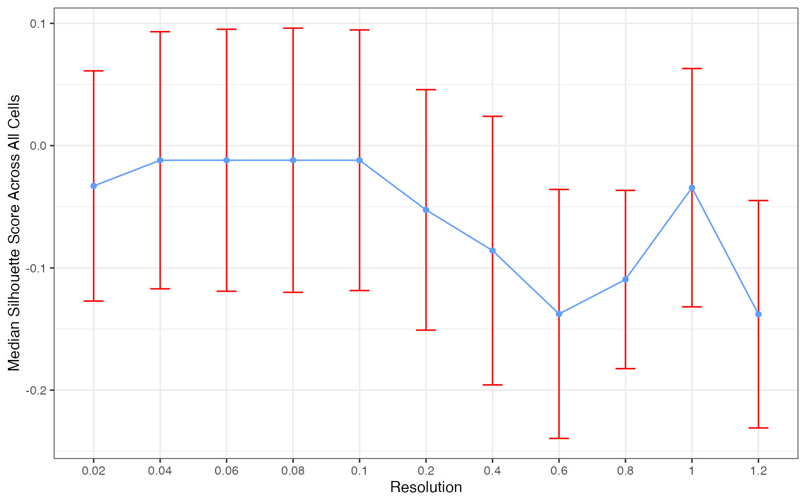
plots[[4]]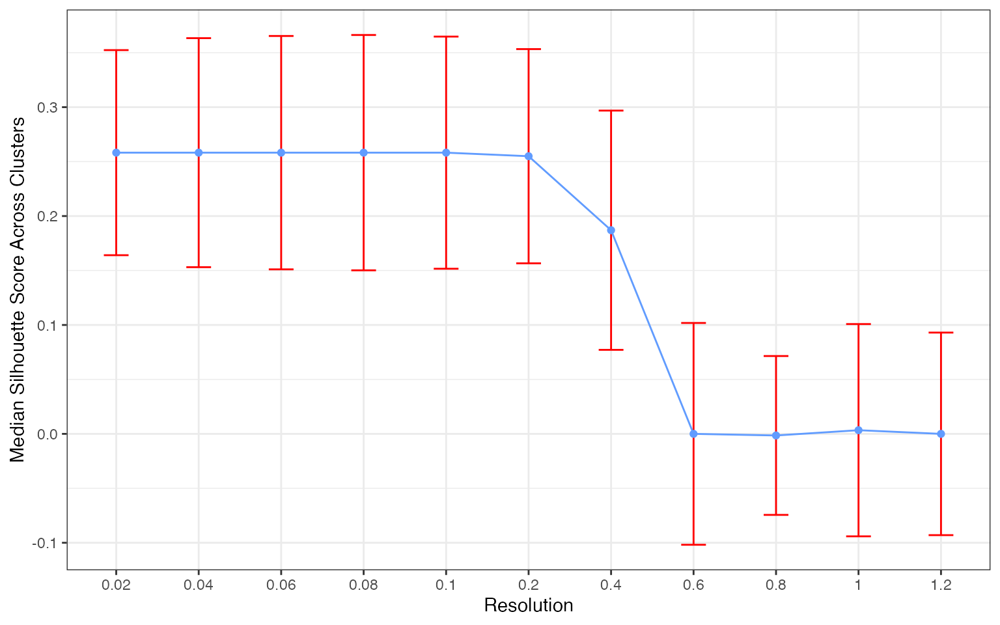
The silhouette score distribution shows how consistently clusters are separated across subjects at each resolution. Key patterns to look for:
- Declining scores at higher resolutions indicate over-clustering, where cells are forced into clusters that don’t represent distinct populations
- Low variance across subjects (narrow boxes) indicates reproducible clustering
- Local maxima may indicate resolutions that capture natural biological structure
The optimal resolution typically shows high median silhouette scores with low variance across subjects, suggesting that the clustering captures cell populations that are consistently distinguishable regardless of which subjects are used for training.
Additional Quality Metrics
Note: We currently recommend silhouette scores for resolution selection. The additional metrics below are still undergoing benchmarking across different experimental settings.
clust_opt() also computes the following at each
resolution:
| Metric | Measures | Better |
|---|---|---|
| avg_width | Silhouette score: cluster separation (recommended) | Higher |
| KLdivergence | KL divergence of cluster proportions (experimental) | Lower |
| Hellinger | Hellinger distance of cluster proportions (experimental) | Lower |
| modularity | Graph modularity of cluster assignments (experimental) | Higher |
head(cv_results)
#> resolution test_sample avg_width cluster_median_widths n_predicted_clusters
#> 1 0.02 JP_RIK_H073 -0.0278377 0.2201124 2
#> 2 0.04 JP_RIK_H073 -0.2112706 0.2411615 3
#> 3 0.06 JP_RIK_H073 -0.2299488 0.0000000 3
#> 4 0.08 JP_RIK_H073 -0.2299488 0.0000000 3
#> 5 0.10 JP_RIK_H073 -0.2299488 0.0000000 3
#> 6 0.20 JP_RIK_H073 -0.2299488 0.0000000 3
#> min_predicted_cell_per_cluster max_predicted_cell_per_cluster mse
#> 1 15 85 231.3450
#> 2 2 86 229.7787
#> 3 1 87 230.9151
#> 4 1 87 230.9151
#> 5 1 87 230.9151
#> 6 0 87 230.9151
#> mad KLdivergence Hellinger modularity
#> 1 22.93898 0.3296330 0.2704394 0.1303816
#> 2 22.73838 0.6291037 0.3341506 0.1218185
#> 3 22.63583 0.7635659 0.3554826 0.1195556
#> 4 22.63583 0.7635659 0.3554826 0.1195556
#> 5 22.63583 0.7635659 0.3554826 0.1195556
#> 6 22.63583 0.6373649 0.3357823 0.1195556
cv_results |>
drop_na() |>
pivot_longer(cols = c(KLdivergence, Hellinger, modularity),
names_to = "metric", values_to = "value") |>
ggplot(aes(x = as.factor(resolution), y = value)) +
geom_boxplot() +
facet_wrap(~metric, scales = "free_y", ncol = 1) +
theme_bw() +
labs(x = "Resolution", y = NULL)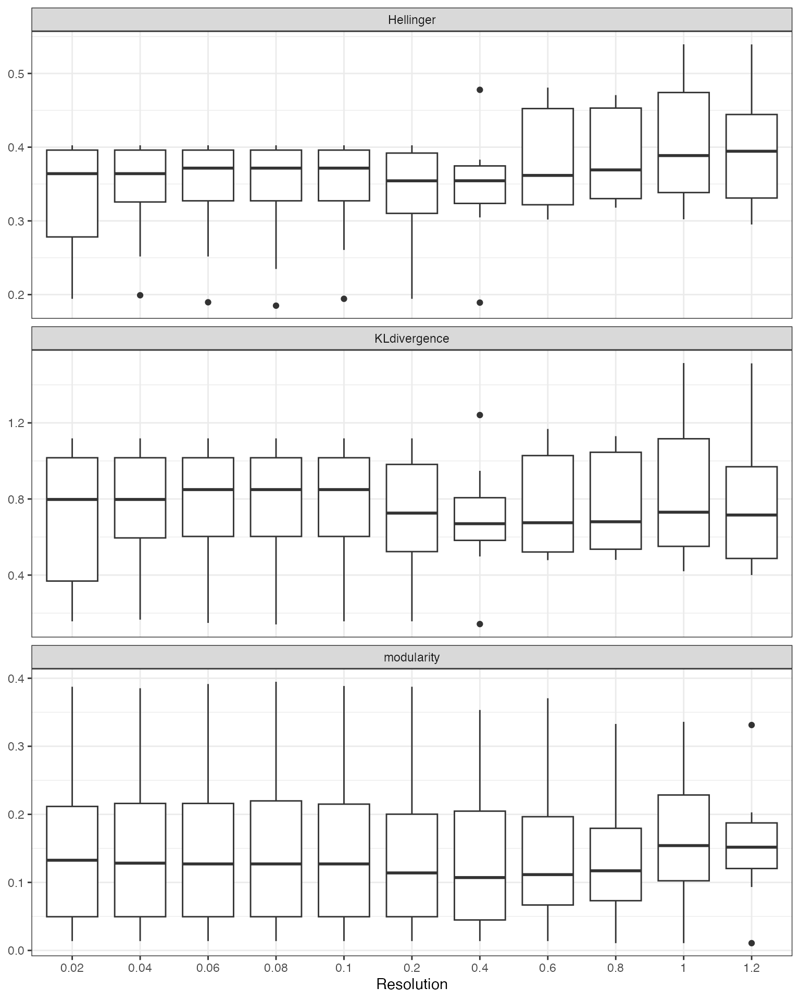
Suggesting a Resolution
suggest_resolution() provides two approaches for
identifying optimal resolutions:
"rank"(default): Ranks all tested resolutions by aggregating their median metric values. Works with any number of subjects."local_optima": Filters to resolutions with reproducible clustering (low Hellinger distance across subjects), then ranks the filtered set using both rank aggregation and curvature-based detection of local optima in the metric curves. Recommended when you have >=10 subjects, as the Hellinger filter thresholds scale automatically with the number of subjects.
plot_rank_metrics() shows the per-metric ranks and
plot_mean_rank() shows the aggregate.
rankings <- suggest_resolution(cv_results)
rankings
#> # A tibble: 11 × 12
#> resolution median_score median_KLD_score median_Hell_score
#> <dbl> <dbl> <dbl> <dbl>
#> 1 0.04 -0.0120 0.798 0.364
#> 2 0.02 -0.0330 0.798 0.364
#> 3 0.2 -0.0526 0.726 0.354
#> 4 0.4 -0.0859 0.670 0.354
#> 5 1 -0.0344 0.730 0.389
#> 6 0.6 -0.138 0.675 0.362
#> 7 0.8 -0.110 0.680 0.369
#> 8 0.06 -0.0120 0.849 0.372
#> 9 0.08 -0.0120 0.849 0.372
#> 10 0.1 -0.0120 0.849 0.372
#> 11 1.2 -0.138 0.716 0.394
#> # ℹ 8 more variables: median_modularity_score <dbl>,
#> # standard_error_Hell_score <dbl>, upper_Hell_95ci <dbl>, rank_sil <dbl>,
#> # rank_kl <dbl>, rank_hellinger <dbl>, rank_modularity <dbl>, mean_rank <dbl>
plot_rank_metrics(rankings)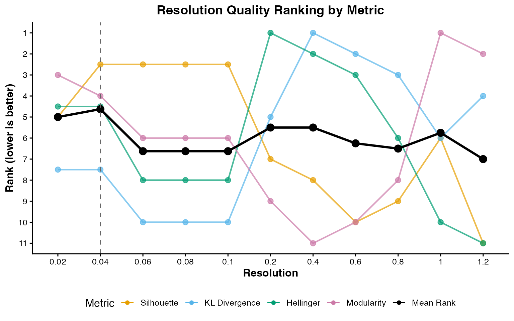
plot_mean_rank(rankings)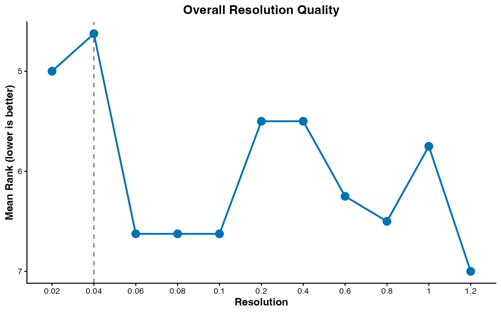
This tutorial uses the default "rank" method. The
example dataset contains only 3 well-separated celltypes, so a simple
rank aggregation is sufficient. For real-world datasets with a denser
resolution grid and more ambiguous cluster structure,
method = "local_optima" can better identify resolutions
that sit at natural inflection points in the metric curves. See
?suggest_resolution for details.
Comparison to the cell annotations
input <- FindNeighbors(input, dims = 1:20, verbose = FALSE)
input <- FindClusters(input, resolution = 0.04)
#> Modularity Optimizer version 1.3.0 by Ludo Waltman and Nees Jan van Eck
#>
#> Number of nodes: 1000
#> Number of edges: 31348
#>
#> Running Louvain algorithm...
#> Maximum modularity in 10 random starts: 0.9855
#> Number of communities: 3
#> Elapsed time: 0 seconds
DimPlot(input,
group.by = "seurat_clusters",
pt.size = .8
)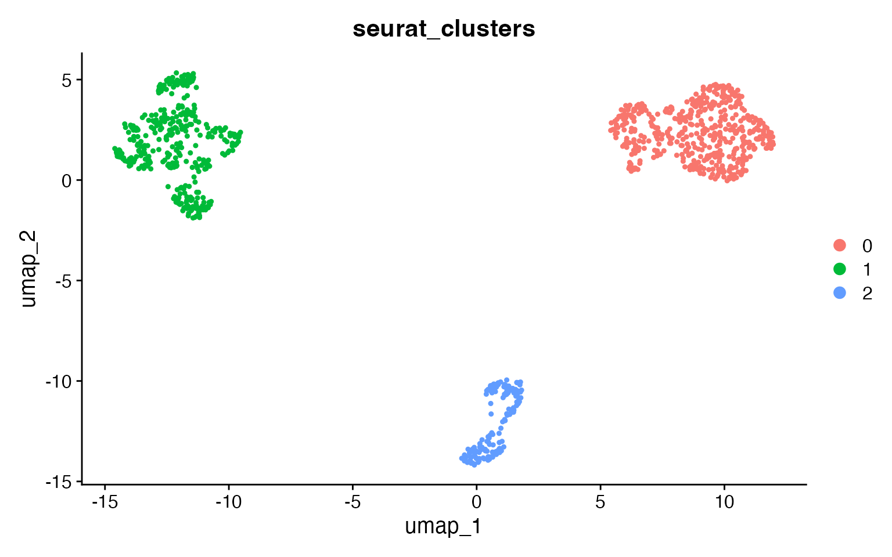
At the reproducible resolution there are 3 clusters, corresponding to
the 3 celltypes. Use adjusted_rand_index() to compare any
two metadata columns:
adjusted_rand_index(input,
meta1 = "seurat_clusters",
meta2 = "broad_cell_type"
)
#> [1] 1
adjusted_rand_index(input,
meta1 = "seurat_clusters",
meta2 = "author_cell_type"
)
#> [1] 0.8056774Larger Datasets
Due to the resource requirements of clustOpt, we recommend running it
in Rscripts with the future plan set to “multicore” instead
of “multisession” and if possible using future.batchtools.
Additionally we provide a wrapper around Seurat’s
SketchData using the leverage score method to reduce the size of the
input data to clustOpt.
input <- leverage_sketch(input, sketch_size = 100)
#> ℹ Sketching scRNA data: 1000 -> 100 cells
#> ℹ Removing previously calculated leverage scores...
#> ℹ Normalizing scRNA-seq data...
#> ℹ Finding variable features for scRNA-seq data...
#> Renaming default assay from sketch to RNA
input
#> An object of class Seurat
#> 13855 features across 100 samples within 1 assay
#> Active assay: RNA (13855 features, 2000 variable features)
#> 3 layers present: counts, data, scale.dataFor long runs on an HPC cluster, pass a checkpoint_dir
to guard against job timeouts. Each holdout subject’s result is written
there as it completes, so rerunning with the same directory resumes from
where the job stopped instead of starting over. The sketched input and
run seed are saved too, making a resumed run reproducible. Use a fresh
directory per analysis: reusing one with a different configuration or
input is rejected.
clust_opt(input,
ndim = 10,
subject_ids = "donor_id",
checkpoint_dir = "clustopt_checkpoints"
)